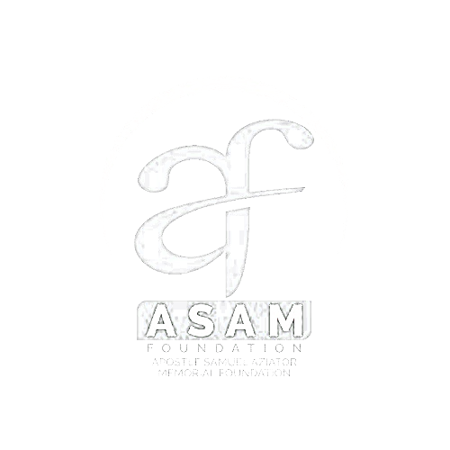
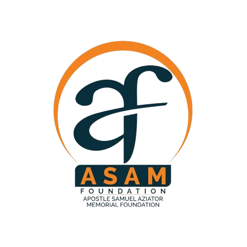

About ASAM Foundation
APOSTLE SAMUEL AZIATOR MEMORIAL FOUNDATION ASAM-FOUNDATION

The Apostle Samuel Aziator Memorial (ASAM) Foundation was established in honor of Apostle Samuel Aziator, the founding Apostle of the Church of Conquerors International.
1
Our Mission
To provide support and empowerment to two main groups:
- Church of Conquerors International Ghana members
- Community members (non-church affiliates)
2
Our Vision
To become a leading empowerment foundation, transforming lives through education, entrepreneurship, and skills development, and fostering a community of self-sustaining individuals
Driven by his passion for empowerment, Apostle Aziator uplifted many lives by providing:
- Educational support for brilliant but needy students
- Business start-up funding and mentorship
- Apprenticeship opportunities for skills development
- Support for widows and the needy in society
After his passing, Church of Conquerors International and his family established ASAM Foundation to perpetuate his legacy of kindness, generosity, and empowerment.
Apostle Aziator positively impacted
100+lives
both within and outside the church community